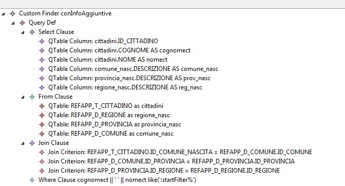

Questa guida descrive un particolare modalità di utilizzo del CustomFinder, ovvero quella che prevede la modellazione quasi completa della query in luogo della sua codifica manuale in linguaggio java.
Il CustomFinder è una particolare tipologia di finder che viene in aiuto del programmatore allorquando sia necessario definire una query con un criterio di filtro molto particolare, che non possa essere realizzato agevolmente tramite le altre tipologie di Finder. La versione originaria (precedentemente alla v. 1.2.0 di datagen) del CustomFinder prevedeva la necessità da parte dello sviluppatore di codificare manualmente (all'interno di apposite regioni progette) la query da realizzare, con le seguenti limitazioni:
Queste limitazioni creavano spesso la necessità di creare dei DAO custom (interamente scritti a mano) per la realizzazione delle query non mono-tabella, rendendo di fatto limitato alle funzionalità CRUD monotabella l'utilizzo del tool.
Dalla versione 1.2.0 è invece possibile utilizzare il CustomFinder in una nuova modalità che prevede la modellazione quasi totale della query e rimuove alcune delle limitazioni viste in precedenza.
Per utilizzare questa nuova modalità è necessario modellare all'interno di un CustomFinder un elemento di tipo QueryDef. Come può far intuire il nome questo elemento permette di definire mediante modellazione una query utilizzando le consuete metafore proprie del linguaggio SQL, ovvero:
Serve per defnire l'elenco delle tabelle che devono essere considerate nella query. La semantica è esattamente la stessa del linguaggio SQL puro. La clausola From contiene una o più elementi di tipo QTable (Query-Table): ciascun elemento di questo tipo referenzia una Table effettiva e permette di specificare un alias, che viene utilizzato tipicamente per disambiguare la query in caso vi siano occorrenze ripetute della stessa tabella. La presenza di una QTable nell'elemento From implica la presenza della tabella specificata nella clausola FROM della query SQL generata (con l' eventuale presenza dell'alias, se specificato).
Permette di definire l'elenco delle colonne che verranno inviate in output. Non vi è più nessun legame stretto con la mainTable; è infatti possibile inviare in output due tipologie di colonne:
upper($1) || '-' || to_date($2, 'dd-MM-yyyy')Nel caso siano state specificate due o più QTable all'interno dell'elemento From è possibile specificare i criteri di Join tra tali tabelle. Per far ciò è necessario definire una serie di elementi di tipo JoinCriterion, ciascuno dei quali permette di specificare un vincolo di uguaglianza tra due colonne di due tabelle ( le due tabelle sono identificate all'interno dell'elemento come left table/column e right table/column).
Oltre al criterio di selezione implicito nella presenza di una eventuiale clausola JOIN
è possibile specificare il vero e proprio criterio di selezione, tramite la definizione
di un elemento di tipo Where. Il criterio deve essere definito a testo libero
e può contenere segnaposto nel formato: ":<nome_parametro>"
All'interno dell'unica regione protetta generata nel metodo java corrispondente al CustomFinder è poi necessario impostare il valore a runtime di tali parametri, con la sintassi utilizzata per i CustomFinder "vecchia maniera". La correttezza della sintassi dell'espressione di filtro è a carico dello sviluppatore. In particolare esso dovrà tener conto di eventuali alias utilizzati nella definizione di QTable e QTableColumn.
Nella figura seguente è rappresentato un esempio di CustomFinder con QueryDef

Nella modalità QueryDef il tipo di ritorno del metodo generato in corrispondenza del
CustomFinder non è il tipo del DTO associato alla mainTable del
DataAccessObject, bensì è un tipo specifico per ciascun finder modellato in
questa modalità. Nell'esempio riportato nella figura precedente, che è
relativo ad un CustomFinder di nome "conInfoAggiuntive" definito nel
DataAccessObject "Cittadino", il nome della classe che conterrà
ciascun elemento in output sarà: CittadinoConInfoAggiuntiveDto e conterrà
i campi relativi alle colonne (calcolate o no) definite nella clausola Select.
Nel caso di CustomFider con QueryDef non viene utilizzato il meccanismo dei LookupResolver
Allo stato attuale non è possibile:
Esempi pratici dell'utilizzo della modalità QueryDef dei CustomFinder si possono trovare all'interno della Reference Application MDD.